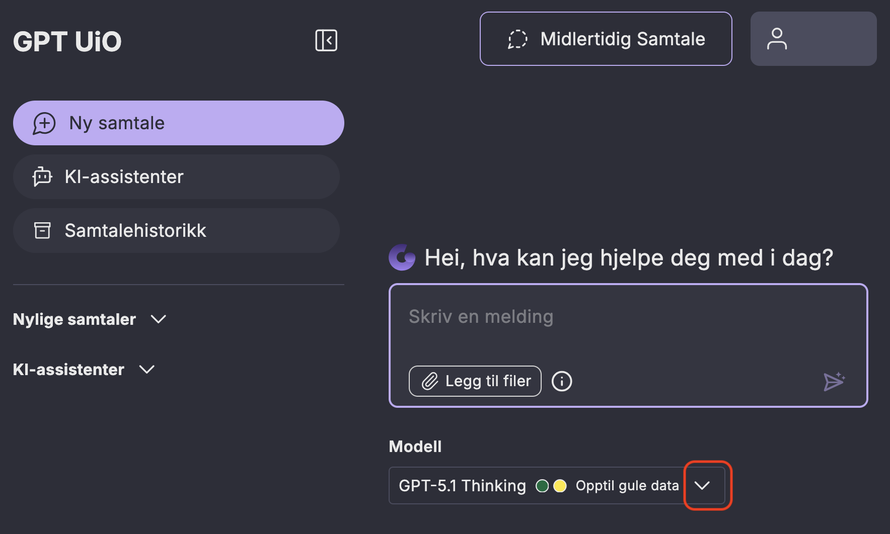

GPT UiO: which model should you choose?
In GPT UiO you can choose between several different language models - that is, which “brain” the service uses. The models have different sizes, features and use cases.
A particularly important difference between the models is whether they run in the cloud (OpenAI’s GPT models in the Microsoft Azure cloud) or locally. By locally we mean on servers owned and operated by UiO or our partner NTNU. If you choose a local model, no data leaves UiO/NTNU.
The local language models are good, but they are smaller than those that run in the cloud. This means that if the task you need to solve is very complex, a cloud model may be able to give you a result of better quality.
Key questions for choosing a model
- Is the answer good enough with a smaller model? Great, go for the smaller model and save resources!
- Not good enough quality in the answer? Switch from a smaller local model to a larger cloud model.
- Do you need extra protection for your data? Choose a local model that supports data up to the red class.
- Are you going to process images in addition to text? Choose a model that supports images.
In GPT UiO’s model selector you can read a little about the different models, and see which data classification each one is approved for.
Bonus content
GPT UiO’s model selector


Click the down arrow (marked in red) to see which language models you can choose from.
Example of language models in the model selector

When you click the model selector you see a list of the language models GPT UiO offers. The list is updated when new models or versions become available.
For each model it is indicated which data category it supports, whether it is an experimental model for testing (flask), as well as whether the model supports images.
There is also a short description of what the model is suited for.
And last but not least, whether the model runs locally (at UiO in Educloud or at NTNU); if it does not, it runs in the cloud.